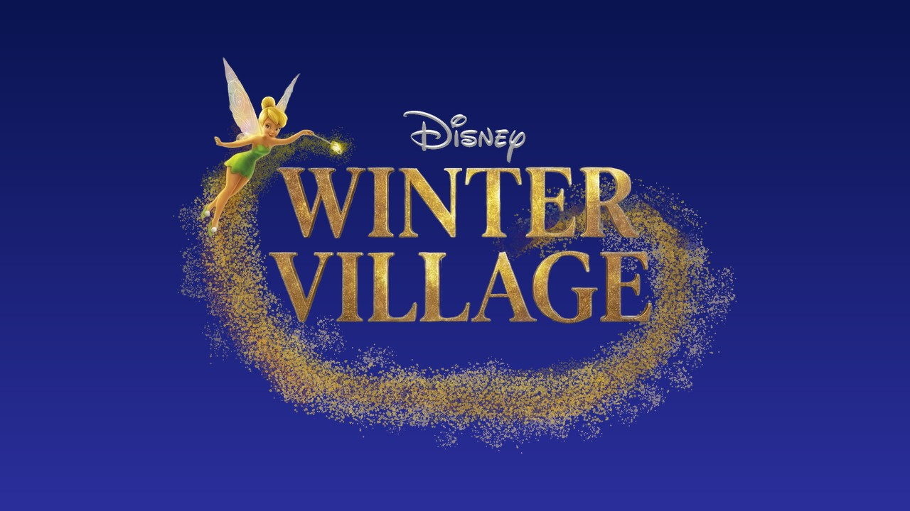

Portfolio 2026
Dylan Protasi.
Content en marketing voor fashion en film. Gemaakt met oog voor detail.

Content en marketing voor fashion en film. Gemaakt met oog voor detail.
Stages en schoolprojecten voor onder meer Kinepolis, Hampton Bays en Pinko.
Trailers, teasers en campagne voor Backrooms.
Meer informatie ›De volledige marketing van een modemerk.
Meer informatie ›
Een trunkshow in Brussel en een eventconcept.
Meer informatie ›
Een transmediaal retailconcept.
Meer informatie ›
Een eigen magazine, van concept tot lay-out.
Meer informatie ›
Eigen campagnes en concepten, deels gemaakt met AI. Alle rechten blijven bij de merken.
Ik ben Dylan, een creatieve en leergierige jongen met een passie voor media, fashion en de filmindustrie. Ik combineer creatief denken met een scherp inzicht in doelgroepgericht werken, zowel zelfstandig als in teamverband.